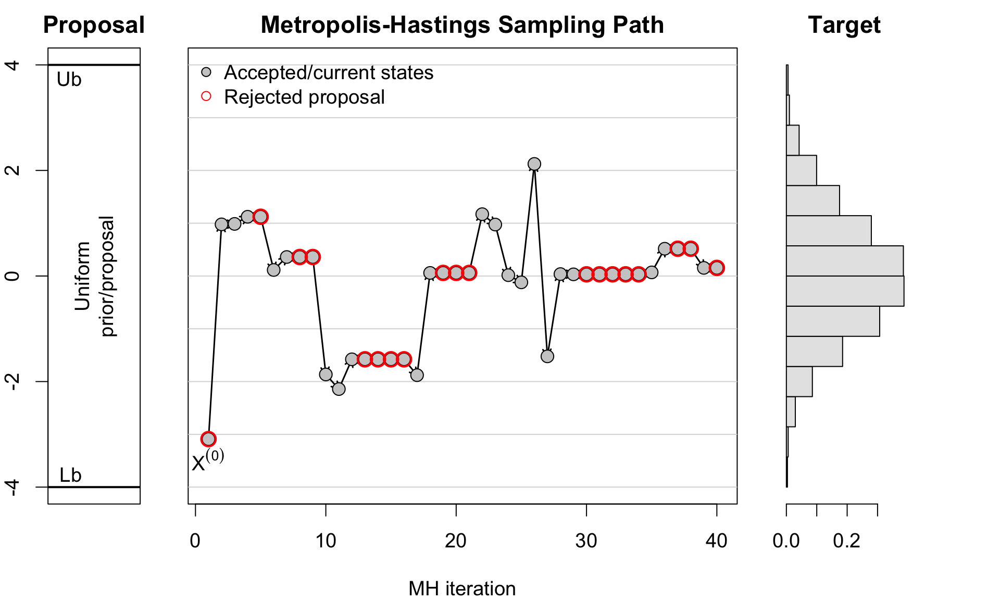
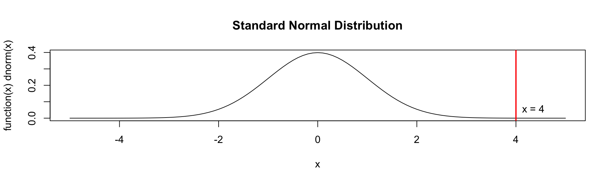
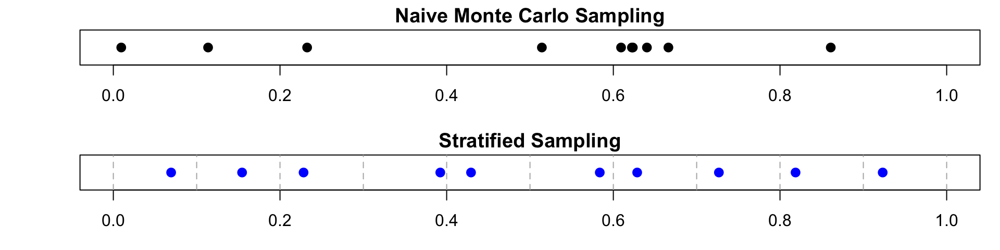
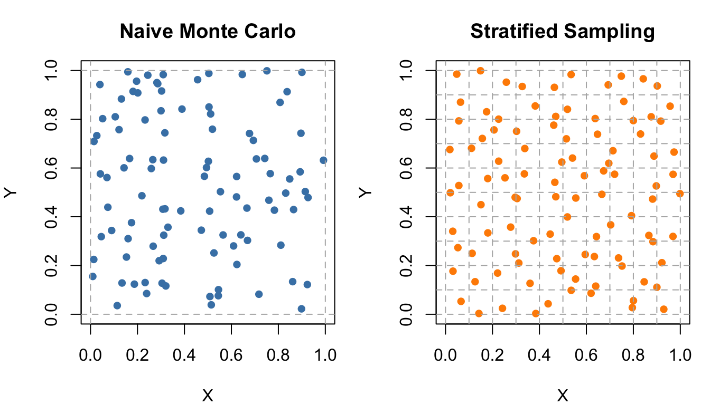
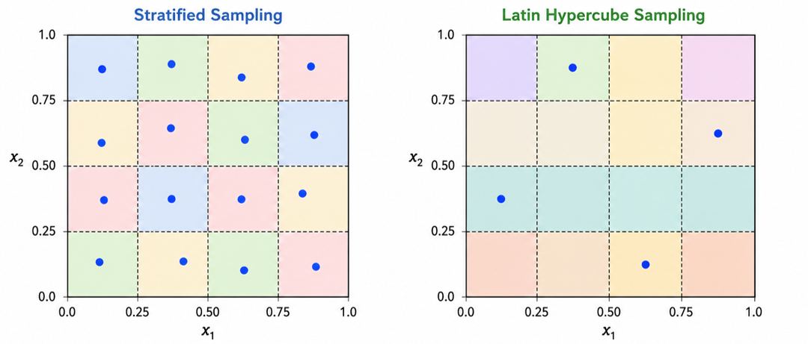
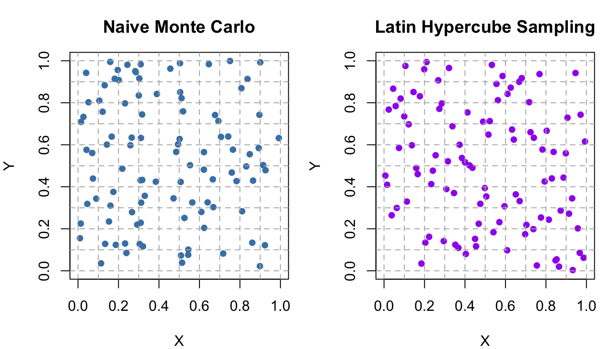

set.seed(1234)
Lb <- -4; Ub <- 4 # bounds of uniform prior / proposal
# Target posterior: proportional to Normal(0, 1), truncated to [Lb, Ub]
posterior <- function(theta) {
ifelse(theta >= Lb & theta <= Ub, dnorm(theta, mean = 0, sd = 1), 0)
}
N <- 5000
theta <- numeric(N); accepted <- logical(N)
theta[1] <- runif(1, Lb, Ub) # Initial value
for (t in 2:N) {
proposal <- runif(1, Lb, Ub)
# Acceptance probability simplifies to ratio of posteriors since proposal is symmetric
alpha <- min(1, posterior(proposal) / posterior(theta[t - 1]))
if (runif(1) < alpha) {
theta[t] <- proposal
accepted[t] <- TRUE
} else {
theta[t] <- theta[t - 1]
accepted[t] <- FALSE
}
}STAT2005 Computer Simulation
Lecture 10 — Simulation in Practice
Sam Wiwatanapataphee (275287a@curtin.edu.au)
21 May 2026
Goals today
- Part 1: Metropolis–Hastings Algorithm (Intuition)
- Part 2: Variance reduction methods
- Importance sampling
- Stratified sampling -Latin Hypercube Sampling
- Part 3: Simulation optimisation (intuitive overview)
- Part 4: Revision & Project Clinic (Workshop)
Part 1: Metropolis–Hastings (MH) Algorithm
Basic MH Idea
Gibbs sampling updates each variable by sampling from its full conditional distribution, which can be inefficient if the conditionals are difficult to sample from or if the variables are highly correlated.
The MH algorithm introduces a more flexible approach by allowing us to propose new states from an arbitrary proposal distribution and then using acceptance probabilities to ensure that the Markov chain converges to the target distribution.
MH Algorithm Steps
Let \(f(x)\) be a function that is proportional to the target distribution \(\pi(x)\) we want to sample from:
Initialisation: Start with an initial state \(X^{(0)}\) at \(t=0.\)
Iteration: For each iteration \(t = 1, 2, \ldots, N\):
Proposal: At iteration \(t,\) generate a new state \(X^*\) from a proposal distribution \(q(X^* | X^{(t)})\).
Acceptance Probability: Calculate the acceptance probability \(\alpha\): \[ \alpha = \min\left(1, \frac{\pi(X^*)\,q(X^{(t)} | X^*)}{\pi(X^{(t)})\,q(X^* | X^{(t)})}\right). \]
Accept or Reject:
- Generate a uniform random number \(u \sim \text{Uniform}(0,1)\).
- If \(u \leq \alpha\), accept the proposed state and set \(X^{(t+1)} = X^*\).
- Otherwise, reject the proposed state and set \(X^{(t+1)} = X^{(t)}\).
Repeat: Repeat steps 2.1 to 2.3 for the desired number of iterations \(N\).
Acceptance Probability (Intuition)
- Suppose that the most recent state of the Markov chain is \(X^{(t)}\).
- The proposal distribution \(q(X^* | X^{(t)})\) is used to generate a candidate state \(X^*\).
- The acceptance probability is given by \(\alpha = \min\left(1, a\right)\), where
\[ a = a_1 \cdot a_2 = \frac{\pi(X^*)}{\pi(X^{(t)})} \cdot \frac{q(X^{(t)} | X^*)}{q(X^* | X^{(t)})}. \]
If \(a \geq 1, X^{(t+1)} = X^*\).
Otherwise,
- \(X^{(t+1)} = X^*\) with probability \(a\) and
- \(X^{(t+1)} = X^{(t)}\) with probability \(1-a\).
\(a_1\) is the probability ratio between the proposed state \(X^*\) and the current state \(X^{(t)}\).
\(a_2\) is the ratio of the proposal distributions in two directions (from current to proposed and conversely), which accounts for the asymmetry in the proposal mechanism.
The acceptance probability \(\alpha\) is the minimum of 1 and \(a\).
If the proposed state is more likely than the current state (i.e., \(a \geq 1\)), it will always be accepted.
If the proposed state is less likely (i.e., \(a < 1\)), it will be accepted with probability \(a\), allowing for occasional moves to less likely states, which helps the chain explore the entire target distribution.
Example 1: Truncated Normal Distribution
Use MH algorithm to sample from a target distribution that is proportional to a truncated normal distribution on the interval \([-4, 4]\).
Python Version
import numpy as np
np.random.seed(1234)
# Bounds of uniform prior / proposal
Lb = -4
Ub = 4
# Target posterior: proportional to Normal(0, 1), truncated to [Lb, Ub]
def posterior(theta):
return np.where((theta >= Lb) & (theta <= Ub),
np.exp(-0.5 * theta**2) / np.sqrt(2 * np.pi), 0)
# Independence Metropolis-Hastings with proposal q(theta*) = Uniform(Lb, Ub)
N = 5000
theta = np.zeros(N)
accepted = np.zeros(N, dtype=bool)
# Initial value
theta[0] = np.random.uniform(Lb, Ub)
for t in range(1, N):
# Propose a new state from the uniform proposal distribution
proposal = np.random.uniform(Lb, Ub)
# Acceptance probability simplifies to ratio of posteriors since proposal is symmetric
alpha = min(1, posterior(proposal) / posterior(theta[t - 1]))
# Accept or reject the proposal
if np.random.uniform() < alpha:
theta[t] = proposal
accepted[t] = True
else:
theta[t] = theta[t - 1]
accepted[t] = FalseExample 3 (cont.): MH Proposal, Sampling Path & Target Distribution

Comparison: Gibbs vs Metropolis–Hastings
Gibbs sampling is a special case of the Metropolis–Hastings algorithm where proposals are generated directly from the conditional distributions. In this case, the acceptance probability is always 1, so every proposal is accepted.
| Feature | Gibbs Sampling | Metropolis–Hastings (MH) |
|---|---|---|
| Update mechanism | Sequential conditional updates | Proposal + acceptance probability |
| Example update | \(X_j^{(t+1)} \sim p(X_j \mid X_{-j},y)\) | Propose \(X^\ast \sim q(X^\ast\mid X^{(t)})\), then accept/reject |
| Proposal distribution? | No explicit proposal distribution | Yes |
| Conditional distributions? | Yes | No |
| Acceptance step & probability? | No (probability always 1) | Yes (probability < 1) |
| Can remain at same state? | Usually no repeated rejection step | Yes, rejected proposals keep current state |
| When useful | Conditional distributions have standard forms | Direct conditional sampling is difficult |
| Typical applications | Bayesian normal models, hierarchical models | General Bayesian inference, complex posteriors |
| Efficiency | Often efficient for conjugate models | Depends heavily on proposal distribution |
Part 2: Variance Reduction Methods
Importance sampling
Stratified sampling
Latin Hypercube Sampling
2.1 Importance Sampling
Importance sampling is a powerful variance reduction technique that allows us to estimate properties of a target distribution by sampling from a different, more convenient distribution.
Recall the Monte Carlo Integration Method from last week, suppose we wish to estimate
\[ \theta = \mathbb{E}[h(X)] = \int h(x)f(x)\,dx, \]
where \(f(x)\) is the target density and \(h(x)\) is a function of interest.
Standard Monte Carlo sampling generates:
\[ X_1,\dots,X_n \sim f(x), \]
and estimates
\[ \hat{\theta}_{MC} = \frac1n\sum_{i=1}^n h(X_i), \]
which is equivalent to the sample mean of \(h(X)\) when \(X\) is drawn from the target distribution \(f(x)\).
What if most of the contribution to the integral comes from the rare event region, which is rarely sampled under \(f(x)\)?
The estimator may have high variance.
Importance Sampling Idea
- Instead of sampling directly from \(f(x)\),
- we sample from an alternative distribution \(g(x)\) that places more probability mass in important regions.
Using the identity
\[ \theta = \int h(x)\frac{f(x)}{g(x)}g(x)\,dx, \]
we obtain the importance sampling estimator:
\[ \boxed{ \hat{\theta}_{IS} = \frac1n \sum_{i=1}^n h(X_i)\frac{f(X_i)}{g(X_i)}, \quad X_i \sim g(x)}. \]
The term
\[ \frac{f(x)}{g(x)} \]
is called the importance weight.
Applications
Rare-event simulation
Reliability analysis
Financial risk analysis
Evaluation of Importance Sampling
The efficiency of importance sampling depends heavily on the choice of the proposal distribution \(g(x)\).
A good proposal distribution should:
- place more probability mass in important regions of the target distribution;
- have tails at least as heavy as the target distribution \(f(x)\);
- be easy to sample from and evaluate.
Recall that we compare Monte Carlo estimators based on their variances.
The relative efficiency of importance sampling compared with Monte Carlo sampling is measured by
\[ \boxed{\text{Efficiency} = \frac{\text{Var}(\hat{\theta}_{IS})}{\text{Var}(\hat{\theta}_{MC})}}. \]
- \(< 1\): importance sampling has lower variance and is therefore more efficient;
- \(> 1\): importance sampling performs worse than standard Monte Carlo sampling.
For a Monte Carlo estimator \(\hat{\theta}\), an approximate \(100(1-\alpha)\%\) confidence interval is
\[ \hat{\theta} \pm z_{\alpha/2} \sqrt{\frac{\text{Var}(\hat{\theta})}{n}}, \]
Example 2: Estimating a Rare Event Probability
Suppose we want to estimate \(P(X > 4)\) where \(X \sim N(0,1).\)

Observations larger than 4 are extremely rare under the standard normal distribution!
Python Version
import numpy as np
from scipy.stats import norm
import matplotlib.pyplot as plt
x = np.linspace(-5, 5, 1000)
plt.plot(x, norm.pdf(x), label='Standard Normal Distribution')
plt.axvline(x=4, color='red', linewidth=2, label='x = 4')
plt.title('Standard Normal Distribution')
plt.show()
true_prob = 1 - norm.cdf(4)
print(f"True probability P(X > 4): {true_prob}")Example 2 (cont.): Estimation
Suppose we don’t know the true value of \(P(X > 4)\) and we want to estimate it using both standard Monte Carlo sampling and importance sampling.
set.seed(1123)
n <- 10000
x <- 4
# Standard Monte Carlo
X_mc <- rnorm(n)
theta_mc <- mean(X_mc > x)
# Importance Sampling
X_is <- rnorm(n, mean = x)
weights <- dnorm(X_is, mean = 0) / dnorm(X_is, mean = x)
theta_is <- mean((X_is > x) * weights)
# Output results
cat("Standard MC estimate: ", theta_mc, "\n",
"Importance Sampling estimate: ", theta_is, "\n",
"True probability: ", true_prob, "\n", sep = "")Standard MC estimate: 1e-04
Importance Sampling estimate: 3.151556e-05
True probability: 3.167124e-05Python Version
import numpy as np
from scipy.stats import norm
np.random.seed(1234)
n = 10000
x = 4
# Theoretical value
true_value = 1 - norm.cdf(x)
# Standard Monte Carlo
X_mc = np.random.normal(size=n)
theta_mc = np.mean(X_mc > x)
var_mc = np.var(X_mc > x) / n
# Importance Sampling
X_is = np.random.normal(loc=x, size=n)
weights = norm.pdf(X_is, loc=0) / norm.pdf(X_is, loc=x)
theta_is = np.mean((X_is > x) * weights)
var_is = np.var((X_is > x) * weights) / n
# Output results
print("True value:", true_value)
print("Standard MC estimate:", theta_mc)
print("Importance Sampling estimate:", theta_is)
print("Efficiency:", var_is / var_mc)- The importance sampling estimate is much closer to the true value of \(P(X > 4) \approx 3.17 \times 10^{-5}\).
Example 2 (cont.): Efficiency Comparison & Confidence Intervals
Efficiency: 4.50373e-05 - The efficiency is significantly less than 1, indicating that importance sampling is much more efficient than standard Monte Carlo for this rare event estimation.
95% CI for Standard MC: [-9.59964e-05,0.0002959964]
95% CI for Importance Sampling: [3.020023e-05,3.283089e-05]Python Version
from scipy.stats import norm
z_alpha = norm.ppf(0.975)
ci_mc = (theta_mc - z_alpha * np.sqrt(var_mc), theta_mc + z_alpha * np.sqrt(var_mc))
ci_is = (theta_is - z_alpha * np.sqrt(var_is), theta_is + z_alpha * np.sqrt(var_is))
print(f"95% CI for Standard MC: [{ci_mc[0]}, {ci_mc[1]}]")
print(f"95% CI for Importance Sampling: [{ci_is[0]}, {ci_is[1]}]")- The confidence interval for the standard Monte Carlo estimator is much wider than that of the importance sampling estimator, further illustrating the efficiency gain from using importance sampling in this context.
2.2 Stratified Sampling
- Pure random sampling may accidentally oversample some regions of the sample space while undersampling others. This can increase Monte Carlo variability.
- Stratified sampling divides the sample space into non-overlapping regions called strata, then samples separately within each stratum. This ensures that all regions of the sample space are represented in the sample, which can reduce variance and improve estimation accuracy.

Stratified Monte Carlo Estimator
Instead of sampling uniformly across the entire interval, we can partition it into \(K\) equal subintervals (strata):
\[ \left\{\Omega_1, \Omega_2, \dots, \Omega_K: \;\; \bigcup_{k=1}^K \Omega_k = \Omega\right\}. \]
The stratified Monte Carlo estimator is given by
\[ \boxed{\hat{\theta}_{strat} = \sum_{k=1}^K p_k\hat{\theta}_k}, \]
where
- \(p_k\) is the probability weight of stratum \(k\) (proportion of the total sample space represented by stratum \(k\)),
- \(\hat{\theta}_k\) is the estimator within stratum \(k\) (the average of the function values for the samples drawn from stratum \(k\)), given by
\[ \hat{\theta}_k = \frac{1}{n_k}\sum_{i=1}^{n_k} h(X_{k,i}). \]
The stratified Monte Carlo estimator is a weighted average of the estimators from each stratum, where the weights correspond to the proportion of the total sample space represented by each stratum.
Variance of Stratified Estimator and Optimal Allocation
Assuming independence between strata, the variance of the stratified estimator is given by
\[ \boxed{\text{Var}(\hat{\theta}_{strat}) = \sum_{k=1}^K p_k^2 \text{Var}(\hat{\theta}_k) = \sum_{k=1}^K p_k^2 \frac{\sigma_k^2}{n_k}}. \]
A common allocation is proportional allocation, where the number of samples allocated to each stratum is proportional to the stratum’s weight:
\[ n_i = N \cdot p_i, \]
where \(N\) is the total number of samples.
To maximise variance reduction, the optimal allocation assigns samples proportional to both stratum weight and within-stratum standard deviation:
\[ \boxed{n_i = N \cdot \frac{p_i \sigma_i}{\sum_{j=1}^K p_j \sigma_j}}, \]
where \(\sigma_i\) is the standard deviation of the estimator within stratum \(i\).
This is known as optimal allocation or Neyman allocation.
Example 3: Stratified Sampling in One Dimension
Suppose we want to estimate an integral over the interval \([0,1]\). Instead of sampling points uniformly at random across the entire interval, we can partition it into \(K\) equal subintervals (strata):
\[ [0,1] = \bigcup_{k=1}^K \Omega_k, \]
where \(\Omega_k\) is the \(k\)-th stratum (subinterval).
0:(k-1)generates the starting points of each stratum (0, 1, 2, …, k-1).
+ runif(k)adds a random number generated from \(U(0,1)\) to the starting point of each stratum.
- Dividing by
kscales the samples to fit within the interval [0,1]
par(mfrow = c(2,1), mar = c(3,4,1.5,1))
plot(x_mc, rep(1, n), pch = 16, cex = 1.3,
xlim = c(0,1), ylim = c(0.8,1.2),
yaxt = "n", ylab = "", xlab = "Sample Space",
main = "Naive Monte Carlo Sampling")
plot(x_strat, rep(1, n), pch = 16, col = "blue", cex = 1.3,
xlim = c(0,1), ylim = c(0.8,1.2),
yaxt = "n", ylab = "", xlab = "Sample Space",
main = "Stratified Sampling")
abline(v = seq(0, 1, length.out = k+1), col = "grey70", lty = 2)
Python Version
import numpy as np
import matplotlib.pyplot as plt
np.random.seed(1234)
n = 10 # number of samples
x_mc = np.random.uniform(size=n) # naive Monte Carlo samples
k = n # stratified sampling with n strata (one sample per stratum)
x_strat = (np.arange(k) + np.random.uniform(size=k)) / k # stratified samples
fig, axs = plt.subplots(2, 1, figsize=(6, 5))
# Naive MC
axs[0].scatter(x_mc, np.ones(n), s=100, color='steelblue')
axs[0].set_xlim(0, 1)
axs[0].set_ylim(0.8, 1.2)
axs[0].set_yticks([])
axs[0].set_xlabel("Sample Space")
axs[0].set_title("Naive Monte Carlo Sampling")
# Stratified Sampling
axs[1].scatter(x_strat, np.ones(n), s=100, color='blue')
axs[1].set_xlim(0, 1)
axs[1].set_ylim(0.8, 1.2)
axs[1].set_yticks([])
axs[1].set_xlabel("Sample Space")
axs[1].set_title("Stratified Sampling")
# Add strata boundaries
for i in range(k + 1):
axs[1].axvline(i / k, color='grey', linestyle='--')
plt.tight_layout()
plt.show()- The top plot shows the naive Monte Carlo samples, which may cluster in some regions and leave others sparsely sampled.
- The bottom plot shows the stratified samples, which are evenly distributed across the entire interval.
Example 4: Stratified Sampling in Two Dimensions
Suppose we want to estimate an integral over the unit square \([0,1]\times[0,1]\). We can partition the square into \(K \times K\) equal sub-squares (strata) and sample points within each sub-square separately.
The samples from the stratified sampling over \([a,b]^2\) are generated from:
\[ X_{ij} \sim \text{U}\left(a+\frac{i}{k}(b-a), a+\frac{i+1}{k}(b-a)\right), \quad Y_{ij} \sim \text{U}\left(a+\frac{j}{k}(b-a), a+\frac{j+1}{k}(b-a)\right), \]
where \(i,j = 0,1,\dots,k-1\) are the indices of the strata in the x and y directions, respectively.
In the case of the standard interval \([0,1]^2\), this simplifies to
\[ X_{ij} \sim \text{U}\left(\frac{i}{k}, \frac{i+1}{k}\right), \quad Y_{ij} \sim \text{U}\left(\frac{j}{k}, \frac{j+1}{k}\right). \]
par(mfrow = c(1,2), mar = c(4,4,3,1))
plot(x_mc, y_mc, pch = 16, col = "steelblue",
xlab = "X", ylab = "Y", main = "Naive Monte Carlo",
xlim = c(0,1), ylim = c(0,1))
abline(v = c(0,1), col = "grey70", lty = 2)
abline(h = c(0,1), col = "grey70", lty = 2)
plot(x_strat, y_strat, pch = 16, col = "darkorange",
xlab = "X", ylab = "Y", main = "Stratified Sampling",
xlim = c(0,1), ylim = c(0,1))
abline(v = seq(0, 1, length.out = k+1), col = "grey70", lty = 2)
abline(h = seq(0, 1, length.out = k+1), col = "grey70", lty = 2)
Example 5: Estimation of Area Under a Curve
Suppose we want to estimate the area under a curve defined by a function \(f(x)\) on the interval \([0,1]\),
\[ f(x) = \begin{cases} 1 & \text{if } 0 \leq x < 0.5, \\ 0.5 & \text{if } 0.5 \leq x \leq 1. \end{cases} \]
- Calculate the true area under the curve analytically.
- Compare the estimates obtained from naive Monte Carlo sampling and stratified sampling.
- Calculate variance of the two estimators and compare their efficiency.
- The true area under the curve can be calculated analytically as
\[ I = \int_0^1 f(x) \, dx = \int_0^{0.5} 1 \, dx + \int_{0.5}^1 0.5 \, dx = 0.5 + 0.25 = 0.75. \]
- We can estimate the area under the curve using both naive Monte Carlo sampling and stratified sampling.
Using naive Monte Carlo sampling, we can estimate the area by sampling points uniformly from \([0,1]\) and evaluating \(f(x)\) at those points.
Using stratified sampling, we can partition the interval into two strata: \([0, 0.5)\) and \([0.5, 1]\).
- We can calculate the variance of the two estimators and compare their efficiency.
- The naive Monte Carlo estimator has nonzero variance because random samples may not evenly cover both regions of the function.
- In contrast, the stratified estimator has zero variance because:
- samples are forced into both strata;
- and the function is constant within each stratum.
- Therefore, in this example, every stratified sample produces the exact estimate:
\[ \begin{aligned} \hat I_{strat} &= p_1 \cdot \bar f_1 + p_2 \cdot \bar f_2 \\ &= 0.5 \cdot 1 + 0.5 \cdot 0.5 \\ &= 0.75 \end{aligned} \]
2.3 Latin Hypercube Sampling
- Latin Hypercube Sampling (LHS) extends the idea of stratified sampling to multiple dimensions.

- The space is divided into 4x4 strata.
- One point is sampled from each stratum.
- Ensures uniform coverage of the sample space.
- The space is divided into 4 intervals along each dimension.
- One point is sampled from each interval along each axis.
- Ensures better coverage of the parameter space in each dimension.
General LHS Construction
Suppose we want to generate \(n\) samples in \(d\) dimensions.
For each dimension \(j=1,\dots,d\):
- divide \([0,1]\) into \(n\) equal intervals;
- sample one point from each interval;
- randomly permute the intervals independently across dimensions.
For \(i=1,\dots,n\) and \(j=1,\dots,d\), the general LHS construction is:
\[ \boxed{ X_{ij} = \frac{\pi_j(i-1) + U_{ij}}{n}}, \]
where:
- \(X_{ij}\) is the \(i\)-th sample for dimension \(j\);
- \(U_{ij} \sim \text{Uniform}(0,1)\);
- \(\pi_j\) is a random permutation of \({0,1,\dots,n-1}\) for dimension \(j\).
Here:
- \(\pi_j(i-1)\) chooses which interval is used;
- \(U_{ij}\) places a random point inside that interval;
- dividing by \(n\) rescales to \([0,1]\).
Example 6: Latin Hypercube Sampling in Two Dimensions
- Recall from Example 4 that we want to estimate an integral over the unit square \([0,1]^2\).
- Instead of using stratified sampling with a fixed grid, we can use Latin Hypercube Sampling to generate samples that are more evenly distributed across the entire square.
Python Version
import numpy as np
np.random.seed(1234)
n = 100
# Naive MC
x_mc = np.random.uniform(size=n)
y_mc = np.random.uniform(size=n)
# Latin Hypercube Sampling
x_lhs = (np.arange(n) + np.random.uniform(size=n)) / n
y_lhs = (np.arange(n) + np.random.uniform(size=n)) / n
np.random.shuffle(y_lhs) # Randomly permute one dimensionpar(mfrow = c(1,2), mar = c(4,4,3,1))
plot(x_mc, y_mc, pch = 16, col = "steelblue",
xlab = "X", ylab = "Y", main = "Naive Monte Carlo",
xlim = c(0,1), ylim = c(0,1))
abline(v = seq(0, 1, length.out = 11), col = "grey70", lty = 2)
abline(h = seq(0, 1, length.out = 11), col = "grey70", lty = 2)
plot(x_lhs, y_lhs, pch = 16, col = "purple",
xlab = "X", ylab = "Y", main = "Latin Hypercube Sampling",
xlim = c(0,1), ylim = c(0,1))
abline(v = seq(0, 1, length.out = 11), col = "grey70", lty = 2)
abline(h = seq(0, 1, length.out = 11), col = "grey70", lty = 2)